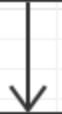
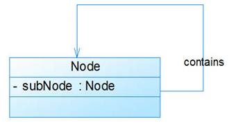
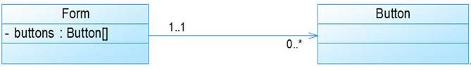
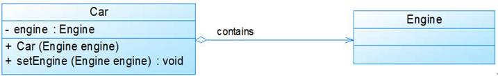
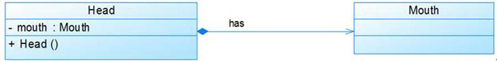
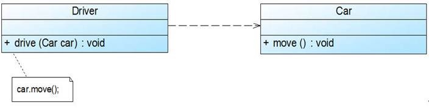
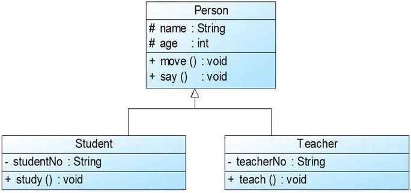
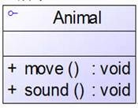
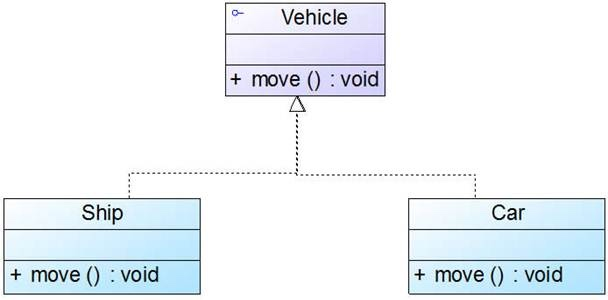
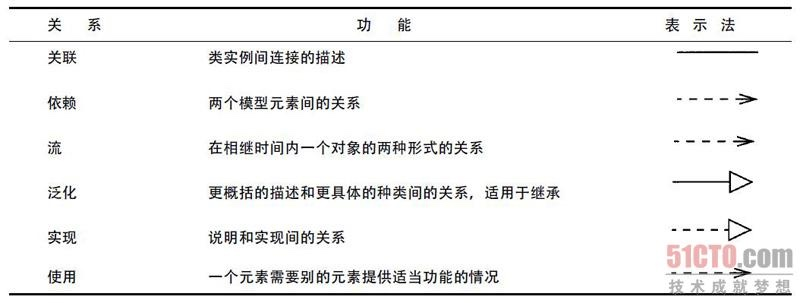

UML类图使用说明
在UML 2.0的13种图形中，类图是使用频率最高的UML图之一。Martin Fowler在其著作《UML Distilled: A Brief Guide to the Standard Object Modeling Language, Third Edition》（《UML精粹：标准对象建模语言简明指南（第3版）》）中有这么一段：“If someone were to come up to you in a dark alley and say, 'Psst, wanna see a UML diagram?' that diagram would probably be a class diagram. The majority of UML diagrams I see are class diagrams.”（“如果有人在黑暗的小巷中向你走来并对你说：‘嘿，想不想看一张UML图？’那么这张图很有可能就是一张类图，我所见过的大部分的UML图都是类图”），由此可见类图的重要性。
类图用于描述系统中所包含的类以及它们之间的相互关系，帮助人们简化对系统的理解，它是系统分析和设计阶段的重要产物，也是系统编码和测试的重要模型依据。
类与类之间的关系
在软件系统中，类并不是孤立存在的，类与类之间存在各种关系，对于不同类型的关系，UML提供了不同的表示方式。
关联关系
关联(Association)关系是类与类之间最常用的一种关系，它是一种结构化关系，用于表示一类对象与另一类对象之间有联系，如汽车和轮胎、师傅和徒弟、班级和学生等等。在UML类图中，用实线连接有关联关系的对象所对应的类，在使用Java、C#和C++等编程语言实现关联关系时，通常将一个类的对象作为另一个类的成员变量。在使用类图表示关联关系时可以在关联线上标注角色名，一般使用一个表示两者之间关系的动词或者名词表示角色名（有时该名词为实例对象名），关系的两端代表两种不同的角色，因此在一个关联关系中可以包含两个角色名，角色名不是必须的，可以根据需要增加，其目的是使类之间的关系更加明确。
对于两个相对独立的对象，当一个对象的实例与另一个对象的一些特定实例存在固定的对应关系时，这两个对象之间为关联关系。
表示类与类之间的联接，有双向关联和单向关联，双向关联有两个箭头或者没有箭头，单向关联有一个箭头，表示关联的方向。
关联关系以实例变量的形式存在，在每一个关联的端点，还可以有一个基数(multiplicity),表明这一端点的类可以有几个实例。
- 双向关联
默认情况下，关联是双向的。例如：顾客(Customer)购买商品(Product)并拥有商品，反之，卖出的商品总有某个顾客与之相关联。因此，Customer类和Product类之间具有双向关联关系。
双向关联使用一条实线表示。
- 单向关联
类的关联关系也可以是单向的，单向关联用带箭头的实线表示。例如：顾客(Customer)拥有地址(Address)，则Customer类与Address类具有单向关联关系，单向关联关系使用如图所示：

- 自关联
在系统中可能会存在一些类的属性对象类型为该类本身，这种特殊的关联关系称为自关联。例如：一个节点类(Node)的成员又是节点Node类型的对象，如图所示：

- 多重性关联
多重性关联关系又称为重数性(Multiplicity)关联关系，表示两个关联对象在数量上的对应关系。在UML中，对象之间的多重性可以直接在关联直线上用一个数字或一个数字范围表示。
对象之间可以存在多种多重性关联关系，常见的多重性表示方式如表1所示：
表1 多重性表示方式列表
表示方式 多重性说明 1..1 表示另一个类的一个对象只与该类的一个对象有关系 0..* 表示另一个类的一个对象与该类的零个或多个对象有关系 1..* 表示另一个类的一个对象与该类的一个或多个对象有关系 0..1 表示另一个类的一个对象没有或只与该类的一个对象有关系 m..n 表示另一个类的一个对象与该类最少m，最多n个对象有关系 (m≤n) 例如：一个界面(Form)可以拥有零个或多个按钮(Button)，但是一个按钮只能属于一个界面，因此，一个Form类的对象可以与零个或多个Button类的对象相关联，但一个Button类的对象只能与一个Form类的对象关联，如图所示：

- 聚合关系
聚合(Aggregation)关系表示整体与部分的关系。在聚合关系中，成员对象是整体对象的一部分，但是成员对象可以脱离整体对象独立存在。在UML中，聚合关系用带空心菱形的直线表示。例如：汽车发动机(Engine)是汽车(Car)的组成部分，但是汽车发动机可以独立存在，因此，汽车和发动机是聚合关系，如图所示：

关联关系的一种，是强的关联关系。聚合是整体和个体的关系。聚合关系也是通过实例变量实现的。例如汽车、发动机、轮胎，一个汽车对象由一个发动机对象，四个轮胎对象组成。当类之间有整体-部分关系的时候，我们就可以使用组合或者聚合。
- 组合关系（合成关系）（composition）
组合(Composition)关系也表示类之间整体和部分的关系，但是在组合关系中整体对象可以控制成员对象的生命周期，一旦整体对象不存在，成员对象也将不存在，成员对象与整体对象之间具有同生共死的关系。在UML中，组合关系用带实心菱形的直线表示。例如：人的头(Head)与嘴巴(Mouth)，嘴巴是头的组成部分之一，而且如果头没了，嘴巴也就没了，因此头和嘴巴是组合关系，如图所示：

合成关系也是关联关系的一种，是比聚合关系更强的关系。合成关系是不能共享的。例如人有四肢、头等。表示类之间整体和部分的关系，组合关系中部分和整体具有统一的生存期。一旦整体对象不存在，部分对象也将不存在。部分对象与整体对象之间具有共生死的关系。
组合关系是关联关系中最强的关系。
依赖关系
依赖(Dependency)关系是一种使用关系，特定事物的改变有可能会影响到使用该事物的其他事物，在需要表示一个事物使用另一个事物时使用依赖关系。大多数情况下，依赖关系体现在某个类的方法使用另一个类的对象作为参数。在UML中，依赖关系用带箭头的虚线表示，由依赖的一方指向被依赖的一方。例如：驾驶员开车，在Driver类的drive()方法中将Car类型的对象car作为一个参数传递，以便在drive()方法中能够调用car的move()方法，且驾驶员的drive()方法依赖车的move()方法，因此类Driver依赖类Car，如图所示：

泛化关系
泛化(Generalization)关系也就是继承关系，用于描述父类与子类之间的关系，父类又称作基类或超类，子类又称作派生类。在UML中，泛化关系用带空心三角形的直线来表示。在代码实现时，我们使用面向对象的继承机制来实现泛化关系，如在Java语言中使用extends关键字、在C++/C#中使用冒号“：”来实现。例如：Student类和Teacher类都是Person类的子类，Student类和Teacher类继承了Person类的属性和方法，Person类的属性包含姓名(name)和年龄(age)，每一个Student和Teacher也都具有这两个属性，另外Student类增加了属性学号(studentNo)，Teacher类增加了属性教师编号(teacherNo)，Person类的方法包括行走move()和说话say()，Student类和Teacher类继承了这两个方法，而且Student类还新增方法study()，Teacher类还新增方法teach()。如图所示：

类与类之间的继承关系，接口与接口之间的继承关系，或类对接口的实现关系。一般化的关系是从子类指向父类的，与继承或实现的方法相反。
接口与实现关系
在很多面向对象语言中都引入了接口的概念，如Java、C#等，在接口中，通常没有属性，而且所有的操作都是抽象的，只有操作的声明，没有操作的实现。UML中用与类的表示法类似的方式表示接口，如图所示：

接口之间也可以有与类之间关系类似的继承关系和依赖关系，但是接口和类之间还存在一种实现(Realization)关系，在这种关系中，类实现了接口，类中的操作实现了接口中所声明的操作。在UML中，类与接口之间的实现关系用带空心三角形的虚线来表示。例如：定义了一个交通工具接口Vehicle，包含一个抽象操作move()，在类Ship和类Car中都实现了该move()操作，不过具体的实现细节将会不一样，如图所示：

具体图例列表如下：

参考文献：